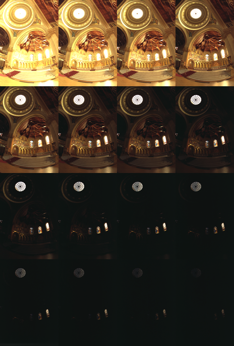
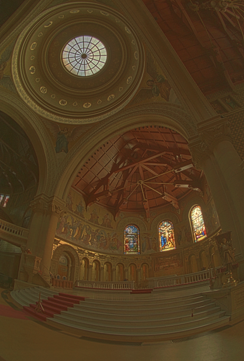

High Dynamic Range Imaging
Introduction
Today most digital images and imaging devices use 8 bits per channel thus limiting the dynamic range of the device to two orders of magnitude (actually 256 levels), while human eye can adapt to lighting conditions varying by ten orders of magnitude. When we take photographs of a real world scene bright regions may be overexposed, while the dark ones may be underexposed, so we can’t capture all details using a single exposure. HDR imaging works with images that use more that 8 bits per channel (usually 32-bit float values), allowing much wider dynamic range.
There are different ways to obtain HDR images, but the most common one is to use photographs of the scene taken with different exposure values. To combine this exposures it is useful to know your camera’s response function and there are algorithms to estimate it. After the HDR image has been blended it has to be converted back to 8-bit to view it on usual displays. This process is called tonemapping. Additional complexities arise when objects of the scene or camera move between shots, since images with different exposures should be registered and aligned.
In this tutorial we show how to generate and display HDR image from an exposure sequence. In our case images are already aligned and there are no moving objects. We also demonstrate an alternative approach called exposure fusion that produces low dynamic range image. Each step of HDR pipeline can be implemented using different algorithms so take a look at the reference manual to see them all.
Exposure sequence
Source Code
#include <opencv2/photo.hpp> #include "opencv2/imgcodecs.hpp" #include <opencv2/highgui.hpp> #include <vector> #include <iostream> #include <fstream> using namespace cv; using namespace std; void loadExposureSeq(String, vector<Mat>&, vector<float>&); int main(int, char**argv) { vector<Mat> images; vector<float> times; loadExposureSeq(argv[1], images, times); Mat response; Ptr<CalibrateDebevec> calibrate = createCalibrateDebevec(); calibrate->process(images, response, times); Mat hdr; Ptr<MergeDebevec> merge_debevec = createMergeDebevec(); merge_debevec->process(images, hdr, times, response); Mat ldr; Ptr<TonemapDurand> tonemap = createTonemapDurand(2.2f); tonemap->process(hdr, ldr); Mat fusion; Ptr<MergeMertens> merge_mertens = createMergeMertens(); merge_mertens->process(images, fusion); imwrite("fusion.png", fusion * 255); imwrite("ldr.png", ldr * 255); imwrite("hdr.hdr", hdr); return 0; } void loadExposureSeq(String path, vector<Mat>& images, vector<float>& times) { path = path + std::string("/"); ifstream list_file((path + "list.txt").c_str()); string name; float val; while(list_file >> name >> val) { Mat img = imread(path + name); images.push_back(img); times.push_back(1 / val); } list_file.close(); }
Explanation
Load images and exposure times
vector<Mat> images; vector<float> times; loadExposureSeq(argv[1], images, times);
Firstly we load input images and exposure times from user-defined folder. The folder should contain images and list.txt - file that contains file names and inverse exposure times.
For our image sequence the list is following:
memorial00.png 0.03125 memorial01.png 0.0625 ... memorial15.png 1024
Estimate camera response
Mat response; Ptr<CalibrateDebevec> calibrate = createCalibrateDebevec(); calibrate->process(images, response, times);
It is necessary to know camera response function (CRF) for a lot of HDR construction algorithms. We use one of the calibration algorithms to estimate inverse CRF for all 256 pixel values.
Make HDR image
Mat hdr; Ptr<MergeDebevec> merge_debevec = createMergeDebevec(); merge_debevec->process(images, hdr, times, response);
We use Debevec’s weighting scheme to construct HDR image using response calculated in the previous item.
Tonemap HDR image
Mat ldr; Ptr<TonemapDurand> tonemap = createTonemapDurand(2.2f); tonemap->process(hdr, ldr);
Since we want to see our results on common LDR display we have to map our HDR image to 8-bit range preserving most details. It is the main goal of tonemapping methods. We use tonemapper with bilateral filtering and set 2.2 as the value for gamma correction.
Perform exposure fusion
Mat fusion; Ptr<MergeMertens> merge_mertens = createMergeMertens(); merge_mertens->process(images, fusion);
There is an alternative way to merge our exposures in case when we don’t need HDR image. This process is called exposure fusion and produces LDR image that doesn’t require gamma correction. It also doesn’t use exposure values of the photographs.
Write results
imwrite("fusion.png", fusion * 255); imwrite("ldr.png", ldr * 255); imwrite("hdr.hdr", hdr);
Now it’s time to look at the results. Note that HDR image can’t be stored in one of common image formats, so we save it to Radiance image (.hdr). Also all HDR imaging functions return results in [0, 1] range so we should multiply result by 255.
Results
Tonemapped image
Exposure fusion